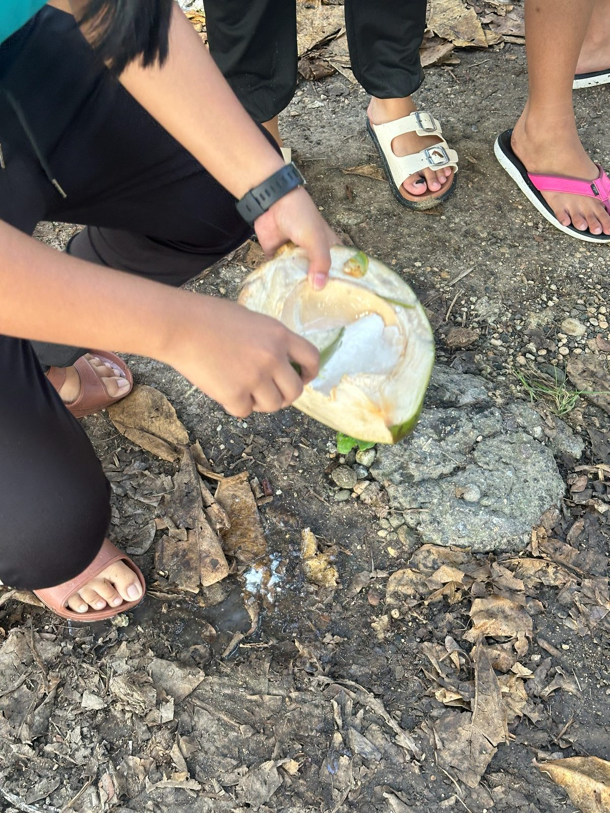
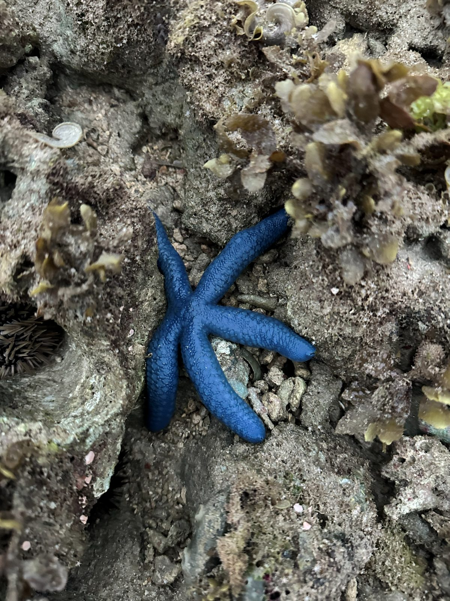
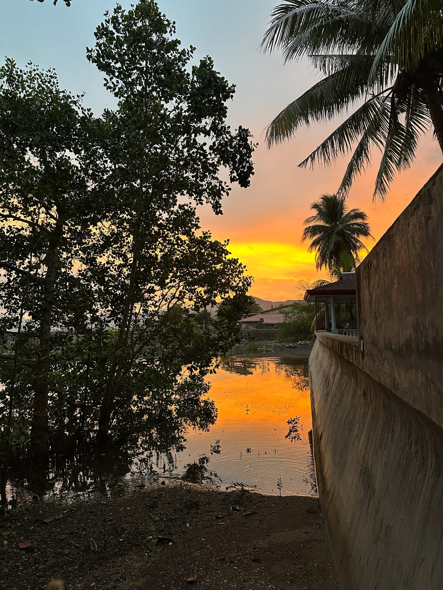
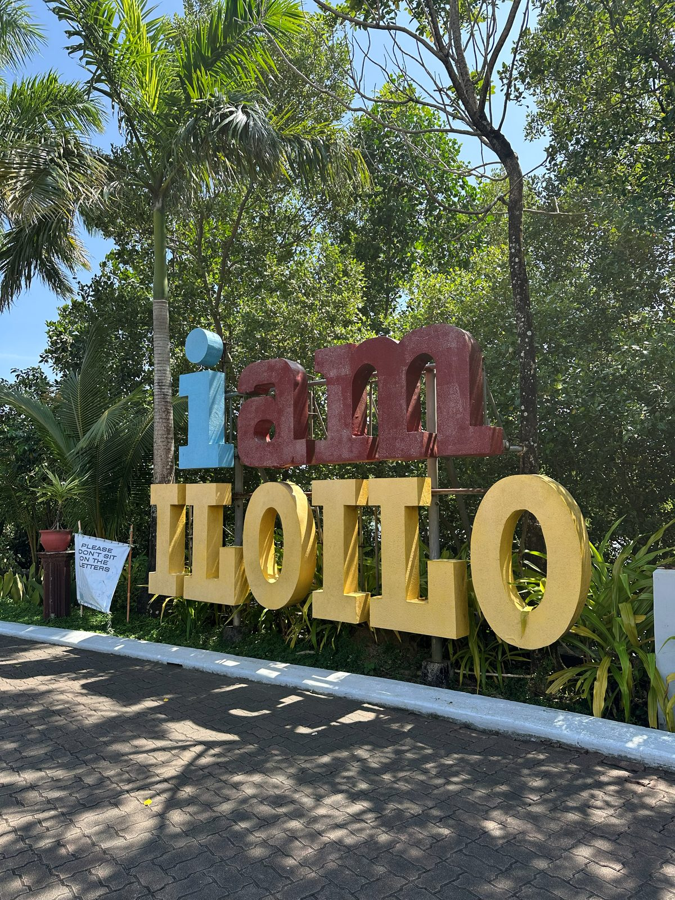
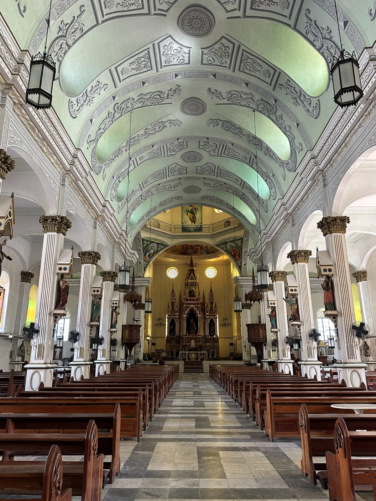
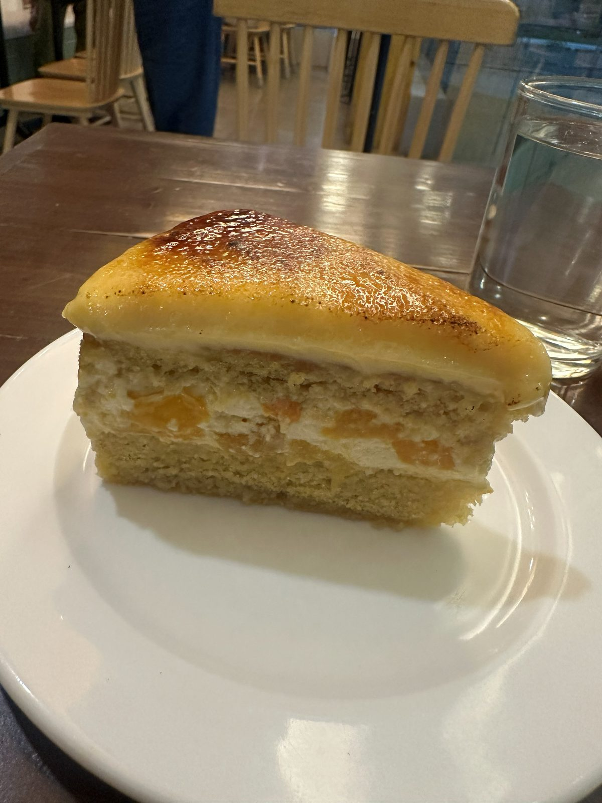

I accepted the Science Corps fellowship with very little idea of what to expect. I was exhausted after defending my dissertation in December and needed to reinvigorate my passion for research and education. I began my journey as a Science Corps fellow with a very open mind, willing to accept whatever Jagna and the Central Visayan Institute Foundation (CVIF) had to offer.
I arrived in Bohol from Cebu and the first few days there were a blur because of my jet lag (Thank you to Ma’am Ella and her father for the transportation!). There was an Astrophysics workshop occurring at CVIF the week I arrived, so classes were cancelled. I was able to attend a few interesting talks. A lot of it went over my head, but it was great to learn more about a field I had very little background in.
I was a lot less jet lagged by the first day of class on Monday, which may have been from the excitement of finally meeting the CVIF students. Working with the students so far has been incredible. The students are very polite, respectful, intelligent, and hard working. The first month of the fellowship has been focused on completing the research projects they started at the beginning of the semester in November. Because I have a background in morphometric analysis, I was excited to lead the morphometrics group. Overall, there are 4 research groups – morphometrics, biodiversity, environmental analysis, and astrophysics.


The second week of school meant that the students had field work to collect data, so we jumped right into establishing field plans and experimental design. The first day of field work took place before sunrise on Monday. We collected data for nearly 5 hours before heading back to the Bernido Compound for sample processing. Students were tasked to identify the collected specimens and take photographs for future measuring. It was a long day, but spirits were high. We did a second day of fieldwork, which went by quickly as the students were more comfortable with the field work protocol. Thanks to Richedel and a coconut harvester, I was able to drink fresh coconut water and eat coconut meat after the second day of fieldwork – electrolytes successfully replenished!

Since completing fieldwork, we have focused on processing samples through species identification and measuring the collected molluscs using ImageJ. It has been really interesting to see the breadth of biodiversity on the coast of Jagna. In just a small area, there are mangroves, seagrass, and reef flats and within those areas the students have identified a wide variety of mollusc species. I am so excited to continue working with my students and to see the final outcome of their research projects.



During my free time as a Science Corps fellow this first month, I have played pickleball with An, Ronald, Anya, and Paolo. It was more of a workout than I thought it would be – I sweat so much, but it was a lot of fun! I have also enjoyed walking around Jagna and going to the market. The mangoes are so juicy and delicious. I also was able to visit Iloilo City for about 5 days and was able to taste delicious food, walk miles around the city, and explore a few museums. I tried pancit molo, batchoy, fresh lumpia, and a few mango shakes. Unfortunately, I ended the trip with a bout of food poisoning, but I have no regrets!
— Adriane McDonald, Science Corps Fellow at CVIF, Jagna, Philippines (Jan–June 2026)